Data Visualization
Get Ready!
- Download datavizR.zip. It contains an R script (dat_viz.R) and the content of this page as a slide deck (ggplot2-pres.pdf).
- Unzip it and put it somwehere you can locate it on your machine.
Data Visualization
Patterns, trends, variability, connections, groups, remarkable data, and wrong data are hard to see in a tabular or raw data. Representing or summarizing data in pictures allows us to easily see patterns, trends, errors, etc
Data visualization (ie “graphing” or “plotting”) is an essential component of an effective data analysis. R was specifically designed to make data visualization fast, easy and practical.
R comes with a graphics package, but we will use a package called ggplot2
About ggplot2
Developed by Hadley Wickham in 2005.
Implements the graphics scheme described in the book The Grammar of Graphics by Leland Wilkinson.
Uses a standardized system of syntax that makes it easy(-ish) to learn
It takes care of a lot fiddly details such as colors, scales, and legend placement
It does not do 3D or interactive graphics
The Grammar of Graphics
The Grammar of Graphics boiled down to 5 bullets, courtesy of Wickham (2016, p. 4):
a statistical graphic is a mapping from data to aesthetic attributes (location, color, shape, size) of geometric objects (points, lines, bars).
the geometric objects are drawn in a specific coordinate system.
scales control the mapping from data to aesthetics and provide tools to read the plot (ie, axes and legends).
the plot may also contain statistical transformations of the data (means, medians, bins of data, trend lines).
faceting can be used to generate the same plot for different subsets of the data.

Source: github.com/rstudio/cheatsheets/raw/master/data-visualization-2.1.pdf
Basic ggplot2 syntax
The basic ggplot2 syntax specifies data, aesthetics and geometric shapes:
ggplot(data, aes(x=, y=, color=, shape=, size=)) +
geom_point(), or geom_histogram(), or geom_boxplot(), etc.
This combination is very effective for exploratory graphs.
The data must be a data frame.
The
aes()function maps columns of the data frame to aesthetic properties of geometric shapes to be plotted.ggplot()defines the plot; thegeomsshow the data; layers are added with+Some examples should make this clear
The Albemarle County homes data
We’ll demonstrate ggplot2 using the Albemarle County real estate data, which was downloaded from Office of Geographic Data Services. See Michele Claibourn’s session for how data were obtained and prepared: https://uvastatlab.github.io/phdplus/dataprep.html
github_url <- "https://github.com/uvastatlab/phdplus/raw/master/data/albemarle_homes.rds"
homes <- readRDS(url(github_url))The str function allows us to take a peek at the structure of the data.
str(homes)## Classes 'spec_tbl_df', 'tbl_df', 'tbl' and 'data.frame': 32746 obs. of 26 variables:
## $ tmp : chr "006000000011B0" "00600000003800" "007000000018B0" "007000000042A0" ...
## $ yearbuilt : num 2006 2003 1974 1954 1987 ...
## $ yearremodeled : num 0 0 0 0 0 ...
## $ usecode : chr "Single Family" "Single Family" "Single Family" "Single Family" ...
## $ condition : Factor w/ 7 levels "None","Substandard",..: 5 5 5 5 5 4 5 5 5 5 ...
## $ finsqft : num 1922 1848 1368 1092 1344 ...
## $ cooling : Factor w/ 2 levels "No Central Air",..: 2 2 1 1 2 1 2 1 1 2 ...
## $ fp_num : num 1 0 0 0 0 0 1 0 0 2 ...
## $ bedroom : num 3 3 3 4 3 5 3 2 4 3 ...
## $ fullbath : num 3 2 1 1 2 2 2 1 1 3 ...
## $ halfbath : num 0 0 0 0 0 0 0 1 0 0 ...
## $ totalrooms : num 10 7 5 6 5 8 7 5 6 6 ...
## $ city : Factor w/ 10 levels "CHARLOTTESVILLE",..: 2 2 10 10 10 10 10 10 10 10 ...
## $ zip : num 22932 22932 22940 22940 22940 ...
## $ lotsize : num 5 61.19 5.39 5.8 2.34 ...
## $ landvalue : num 109800 444100 100400 100700 66500 ...
## $ improvementsvalue: num 300100 79000 128400 77200 165900 ...
## $ totalvalue : num 409900 523100 228800 177900 232400 ...
## $ lastsaleprice : num 0 0 0 0 0 0 0 47000 0 0 ...
## $ lastsaledate : POSIXct, format: "2009-08-05" "1991-05-20" ...
## $ age : num 10 13 42 62 29 96 35 18 66 53 ...
## $ med_age : num 17 17 33 33 33 33 33 37 37 40 ...
## $ fp : num 1 0 0 0 0 0 1 0 0 1 ...
## $ landuse : num 0 0 0 0 0 1 1 1 0 0 ...
## $ insub : num 0 0 0 0 0 0 0 0 0 0 ...
## $ remodel : num 0 0 0 0 0 1 0 0 0 0 ...We can see quite a few variables that might benefit from some visualization.
In this session we’ll focus on the six largest cities in Albemarle county.
vars <- c("CHARLOTTESVILLE", "CROZET", "EARLYSVILLE",
"KESWICK", "SCOTTSVILLE", "NORTH GARDEN")
homes <- homes %>%
filter(city %in% vars)
homes$city <- droplevels(homes$city)ggplot2 examples
scatter plot of totalvalue vs finsqft colored by city
The first argument to ggplot is a data frame. In this case that’s the homes data frame. The next argument maps data to aesthetics using the aes function. It says map finsqft to the x-axis, totalvalue to the y-axis, and colors to city. Then we add points to the plot using geom_point(). The position and color of the points are determined by the aesthetic mappings we defined. Notice the open and closing parentheses for geom_point(). Don’t forget those! geom_point is a function and can take additional arguments.
library(ggplot2) # or library(tidyverse)
ggplot(homes, aes(x=finsqft, y=totalvalue,
color=city)) + geom_point() 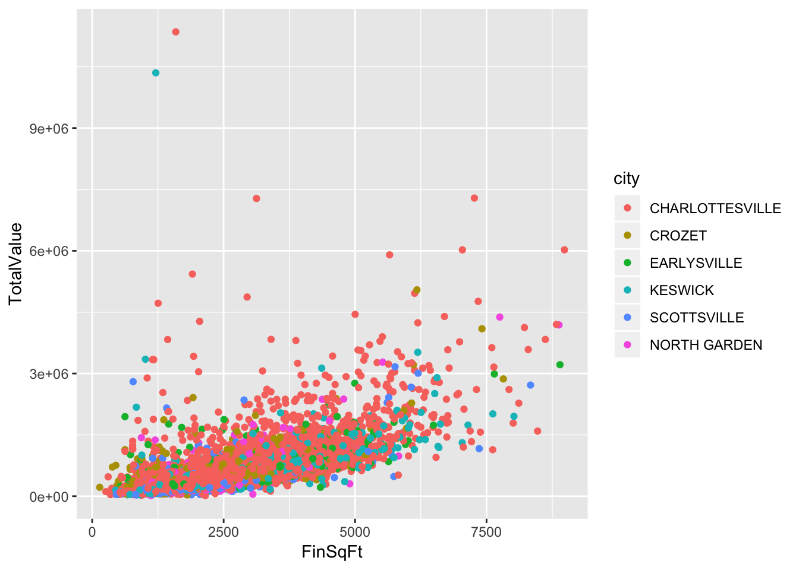
This scatter plot uses both shapes and colors to identify cities.
ggplot(homes, aes(x=finsqft, y=totalvalue,
color=city, shape=city)) +
geom_point() 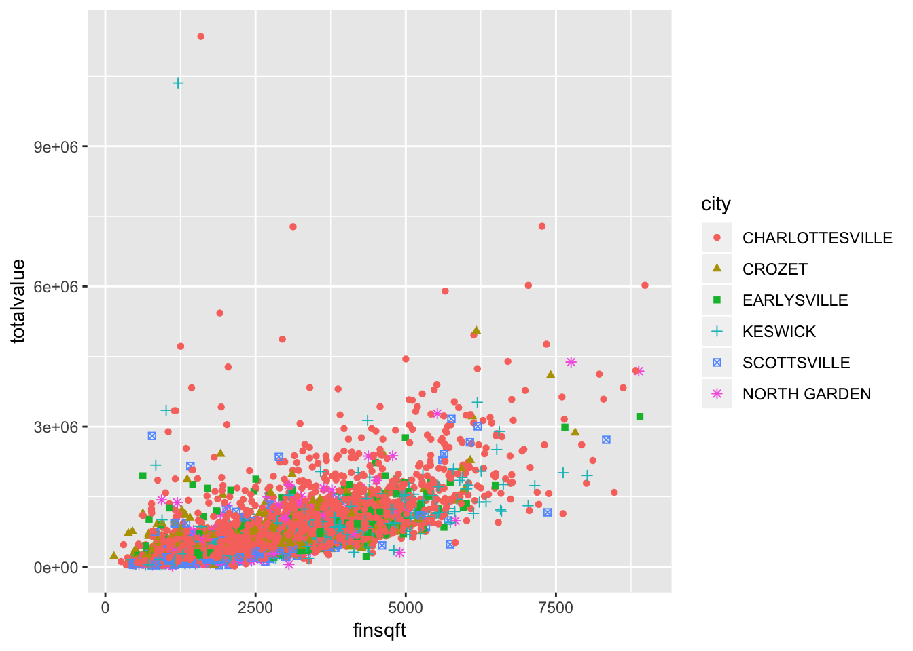
Since we have so much data our plot suffers from an enormous amount of overplotting. Later in the session we’ll review some strategies to address this.
scatter plot colored by condition, size by Bedroom
In this plot we look just at Scottsville. Here condition is mapped to color and size to number of Bedrooms, which creates a second legend.
ggplot(filter(homes, city == "SCOTTSVILLE"), aes(x=finsqft, y=totalvalue,
color=condition, size=bedroom)) +
geom_point() 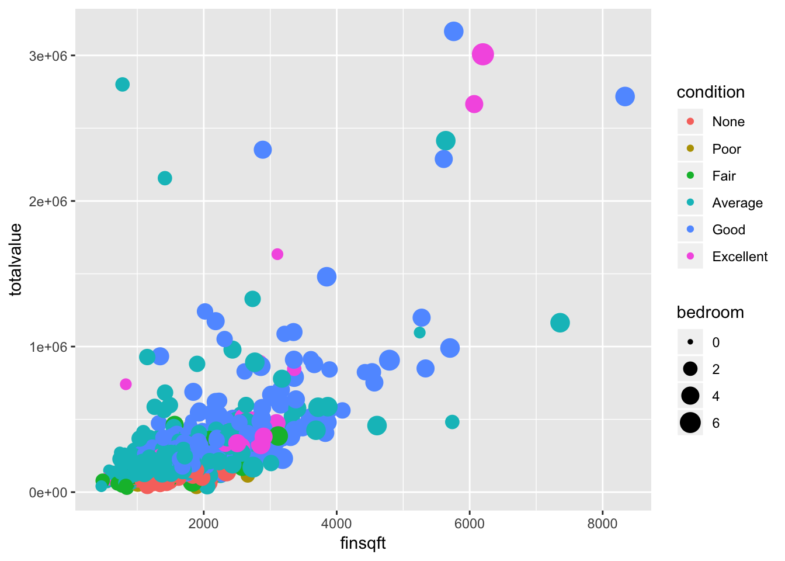
Again overplotting is a bit of an issue.
add multiple geoms (points and smooth line)
We are not restricted to one geometric shape. Here we add a smooth trend line to summarize the relationship between finsqft and totalvalue.
ggplot(homes, aes(x=finsqft, y=totalvalue, color=city)) +
geom_point() +
geom_smooth()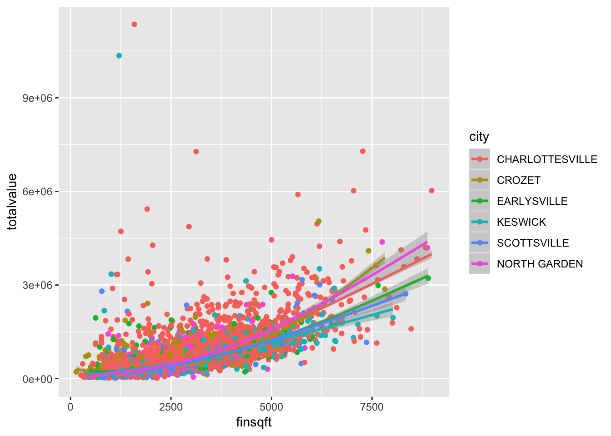
boxplot (statistical transformation)
Some geoms refer to specific plots, such as boxplots. This plot allows us to examine the distribution of finsqft by city. The top of the box is the 75th percentile, the bottom is the 25th percentile, and the line in the middle is the median. The “whiskers” extended to the largest point not to exceed 1.5 times the interquartile range (the difference between the 75th and 25th percentile) from the median. Any points lying beyond this range might be considered unusual relative to the rest of the data. In this data, which is very skewed, we have many homes that appear “unusual” relative to the majority of homes.
ggplot(homes, aes(x=city, y=finsqft)) +
geom_boxplot() 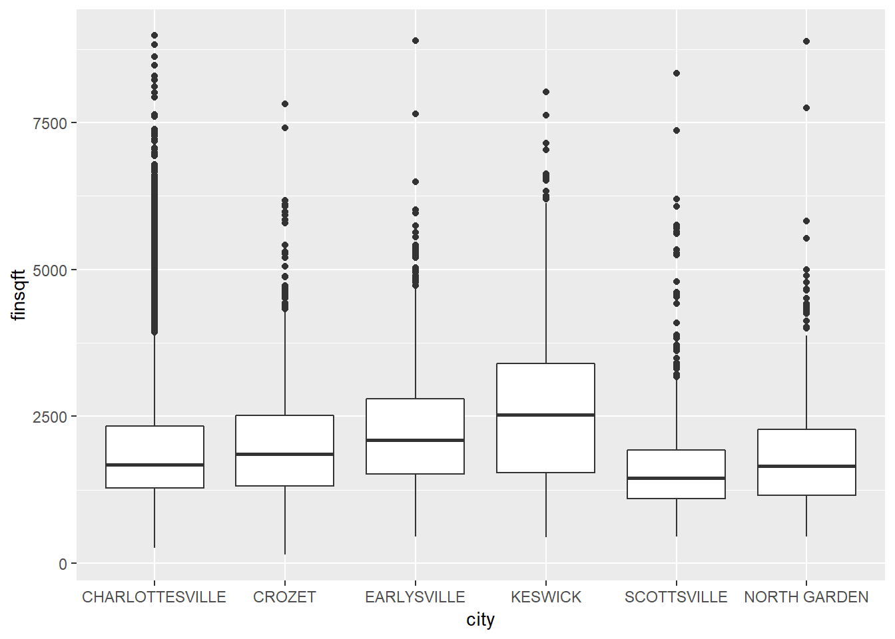
Moving beyond ggplot + geoms
A natural next step in exploratory graphing is to create plots of subsets of data. These are called facets in ggplot2.
Use facet_wrap() if you want to facet by one variable and have ggplot2 control the layout. Example:
+ facet_wrap( ~ var)
Use facet_grid() if you want to facet by one and/or two variables and control layout yourself.
Examples:
+ facet_grid(. ~ var1) - facets in columns
+ facet_grid(var1 ~ .) - facets in rows
+ facet_grid(var1 ~ var2) - facets in rows and columns
facet_wrap example
Scatterplots of totalvalue versus finsqft conditioned on city.
ggplot(homes, aes(x=finsqft, y=totalvalue)) +
geom_point() + facet_wrap(~ city)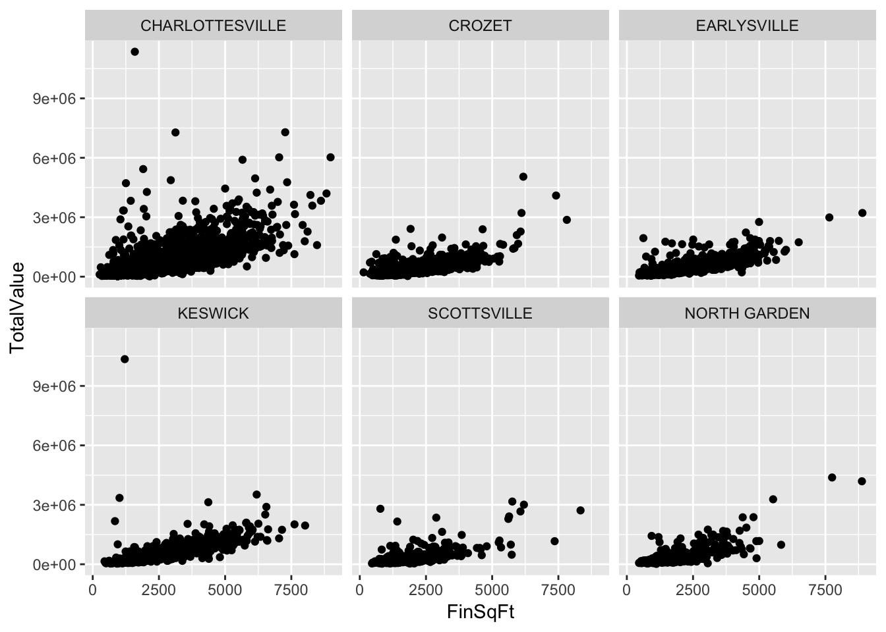
facet_grid example with histograms
Here we use facet_grid(city ~ .) to place the plots on their own row, which shows distribution of finsqft. Note the use of stat(density) in aes, which maps the relative frequency to the y axis (instead of raw counts).
ggplot(homes, aes(x=finsqft, y = stat(density))) +
geom_histogram() + facet_grid(city ~ .) 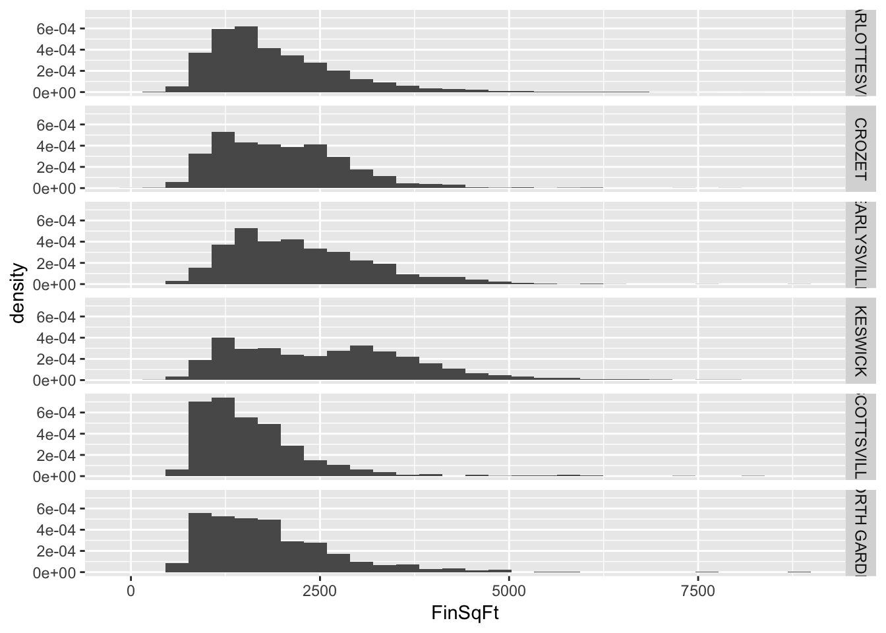
Modifying the coordinate system
coord_cartesianallows us to zoom in on a plot, as if using magnifying glasscoord_fixedallows us to control “aspect ratio”coord_flipallows us to flip the x and y axis
zoom in on plot
This plot “zooms in” on the x-axis from 2000 to 3000 and on the y-axis from 200,000 to 500,000.
ggplot(homes, aes(x=finsqft, y=totalvalue,
color=city)) + geom_point() +
coord_cartesian(xlim = c(2000,3000), ylim = c(2e5, 5e5))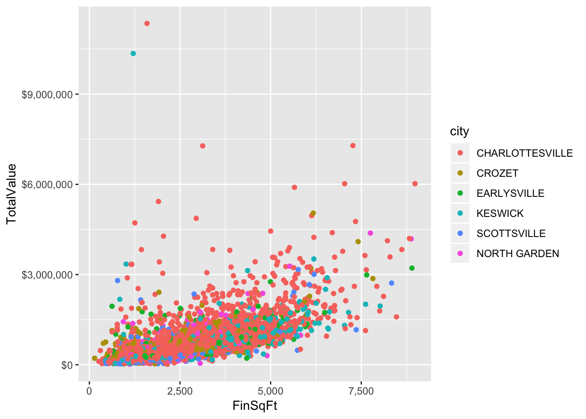
flip coordinate axes
This is our boxplot from earlier rotated.
ggplot(homes, aes(x=city, y=finsqft)) +
geom_boxplot() +
coord_flip()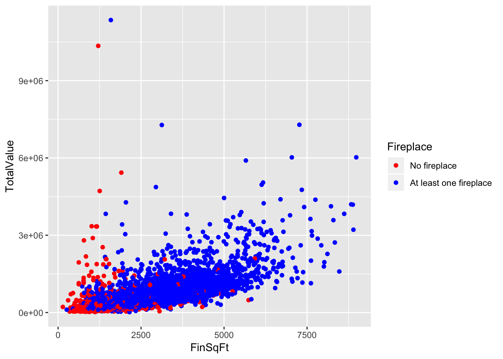
Customizing scales
Scales control the mapping from data to aesthetics and provide tools to read the plot (ie, axes and legends).
Every aesthetic has a default scale. To modify a scale, use a scale function.
All scale functions have a common naming scheme: scale _ name of aesthetic _ name of scale
Examples: scale_y_continuous, scale_color_discrete, scale_fill_manual
Heads up: The documentation for ggplot2 scale functions will frequently use functions from the scales package (also by Wickham)!
update scales for the x and y-axis
Here we customize the x and y-axis by changing the labels. We use the dollar and comma functions from the scales package to format the labels.
ggplot(homes, aes(x=finsqft, y=totalvalue,
color=city)) + geom_point() +
scale_y_continuous(labels = scales::dollar) +
scale_x_continuous(labels = scales::comma)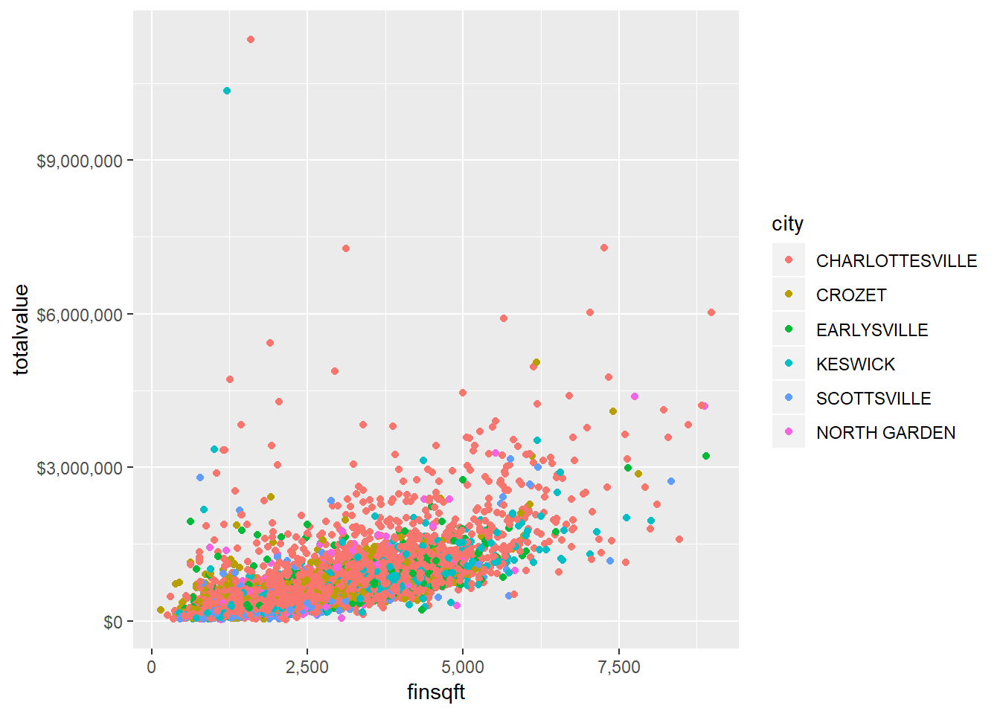
update scale for color
Here we change the point colors, which in turn updates the legend. Notice that because the fp variable was stored as 0/1, we needed to convert it to a factor on-the-fly to map it to color.
ggplot(homes, aes(x=finsqft, y=totalvalue,
color=factor(fp))) + geom_point() +
scale_color_manual(name="Fireplace",
labels = c("No fireplace", "At least one fireplace"),
values=c("red","blue"))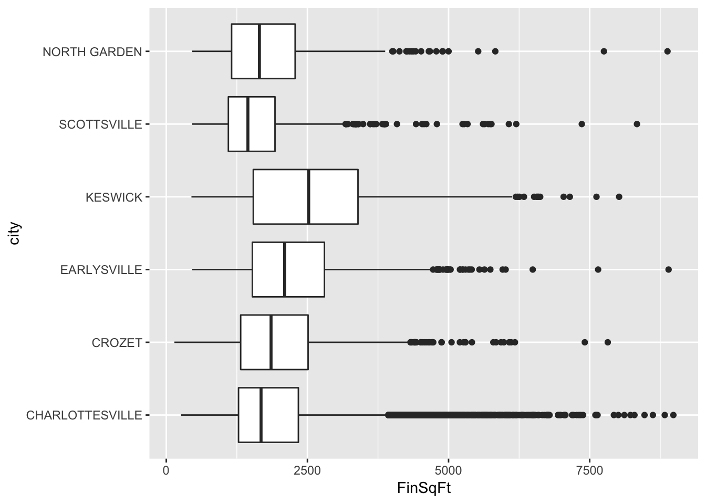
Updating themes and labels
The default ggplot2 theme is excellent. It follows the advice of several landmark papers regarding statistics and visual perception. (Wickham 2016, p. 176)
However you can change the theme using ggplot2’s themeing system. To date, there are seven built-in themes:
theme_gray(default)theme_bwtheme_linedrawtheme_lighttheme_darktheme_minimaltheme_classic
You can also update axis labels and titles using the labs function.
change theme
Adding theme_minimal() produces a minimal plot with no background annotations.
ggplot(homes, aes(x=finsqft, y=totalvalue,
color = city)) + geom_point() +
theme_minimal()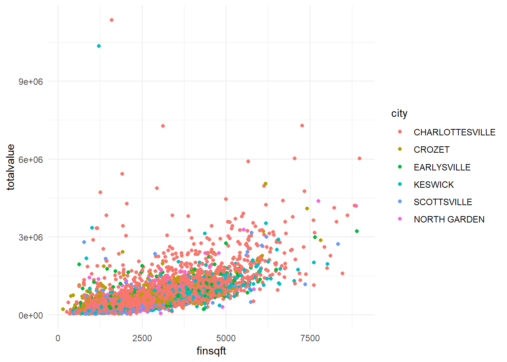
update labels
Here we update the x and y-axis labels and add a title.
ggplot(homes, aes(x=finsqft, y=totalvalue,
color = city)) + geom_point() +
labs(title="Total Value versus Finished Square Feet",
x="Finished Square Feet", y="Total Value (USD)") 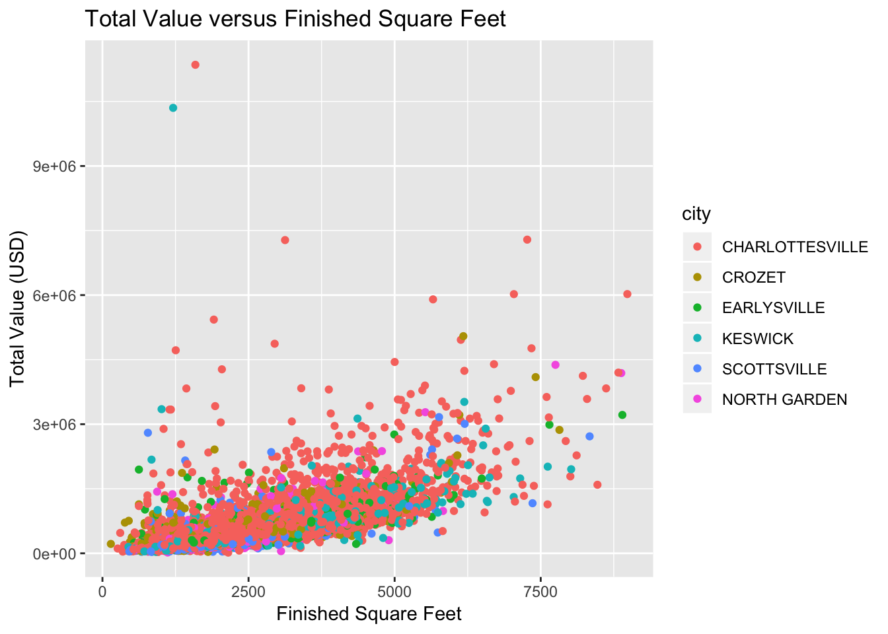
ggplot2 tips
- Can do a lot with
ggplot(data, aes()) + geom! - Data must be a data frame (not a matrix or collection of vectors)
- The
ggplot2documentation has many good examples - Prepare to invest some time if you want master ggplot2; the RStudio ggplot2 cheat sheet can help.
Resources
Chang, W. (2013), R Graphics Cookbook, O’Reilly.
Wickham, H. (2016), ggplot2: Elegant Graphics for Data Analysis (2nd ed), Springer.
Wickham, H. and Grolemund G. (2017), R for Data Science. O’Reilly. http://r4ds.had.co.nz/
ggplot2 cheat sheet
https://github.com/rstudio/cheatsheets/raw/master/data-visualization-2.1.pdf
Cookbook for R - Graphs
http://www.cookbook-r.com/Graphs/
Official ggplot2 web site
https://ggplot2.tidyverse.org/